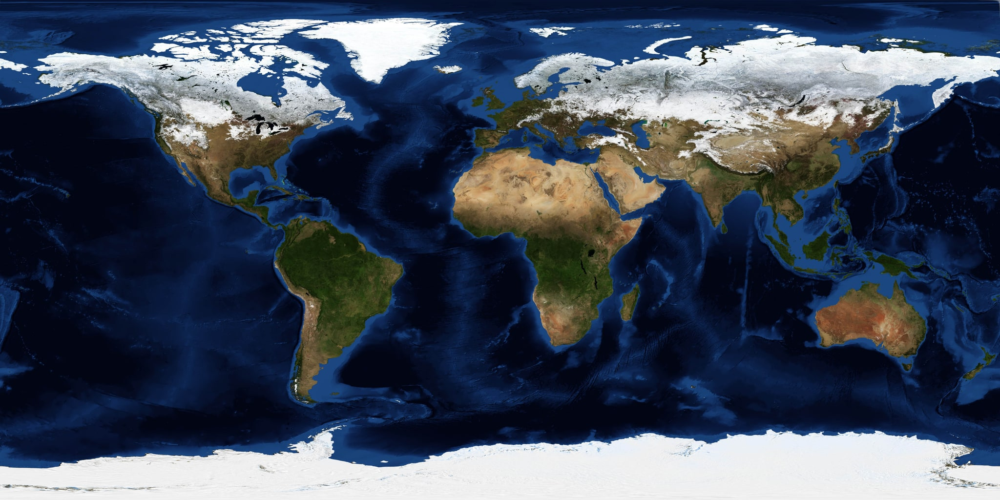

01 / 比较数量
两组柱形共用从零开始的数量轴，便于比较各方向的咨询规模与有据解答数量。
CHAPTER 18 / GLOBAL RESEARCH OBSERVATORY
在地球上探索协作节点，用柱状图与折线图读懂咨询数据。
图表库加载失败，请确认 cdn/echarts.min.js 与本页一同保存。下方数据表仍可查看。
ONE PLANET / MANY IDEAS
以北京为起点，连接八座城市的科研咨询节点。拖动地球改变视角，或选择城市查看当前周期的模拟咨询量。
北京 · — 次模拟咨询
116.41° E / 39.90° N
正在绘制地球…

当前浏览器无法显示三维地球，已显示平面地表；仍可选择城市查看模拟数据。
地表影像：NASA Blue Marble / 贴图来源与离线说明。城市份额按固定权重模拟，合计与当前咨询总量一致。
01 / BAR CHART · 单位：次
点击柱子查看数值；点击图例可隐藏或显示对应数据。
02 / LINE CHART · 单位：次
悬停查看每月数据，拖动底部滑块缩放观察区间。
| 咨询方向 | 咨询总量 | 有据解答 |
|---|
| 月份 | 咨询总量 | 有据解答 |
|---|
两组柱形共用从零开始的数量轴，便于比较各方向的咨询规模与有据解答数量。
两条折线使用相同单位与坐标轴，保留月份顺序；底部滑块只改变显示范围，不改变汇总数字。
有据解答表示有知识库证据支持，不等同于答案准确率；其余咨询可能需要澄清、补充材料或人工处理。